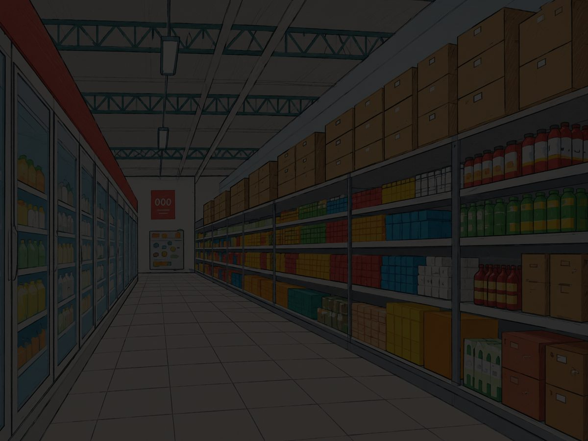
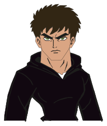

Aventura gráfica · 6 etapas · 3 finales
El supermercado cerró y Nico quedó adentro.
Se quedó en el baño y cuando salió estaba todo apagado. La puerta principal tiene candado y a las 6:00 llega el guardia. Ayudalo a encontrar otra salida.
Equipo: Correa · Bauti · Álvaro · Matías — Proyecto Integrador 2026